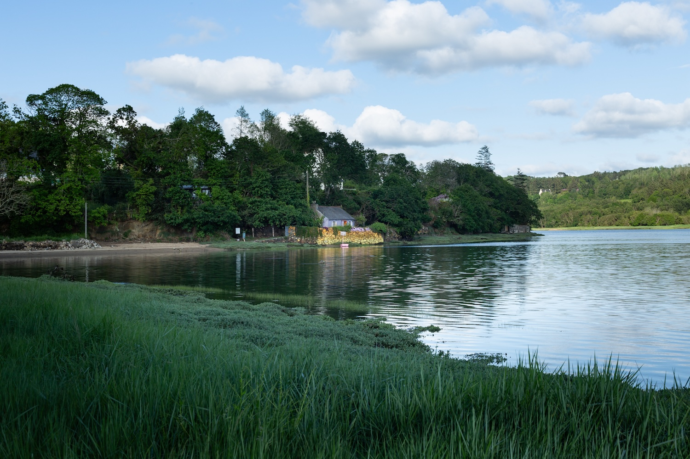
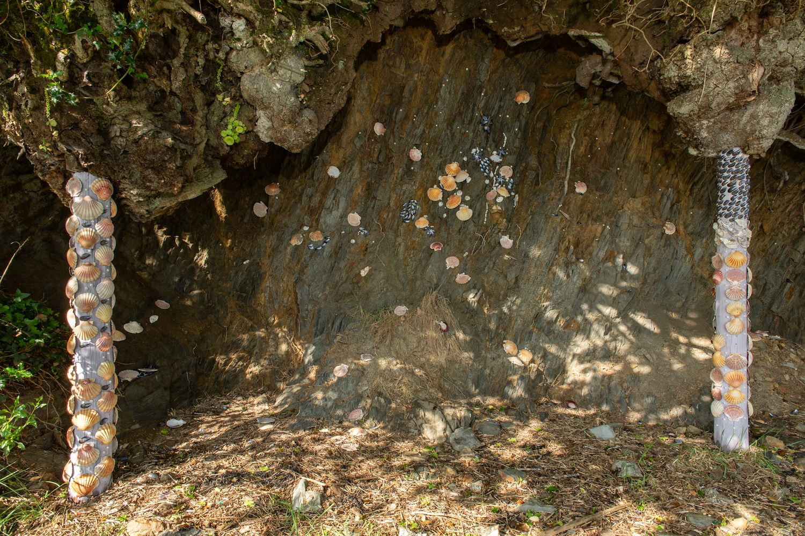
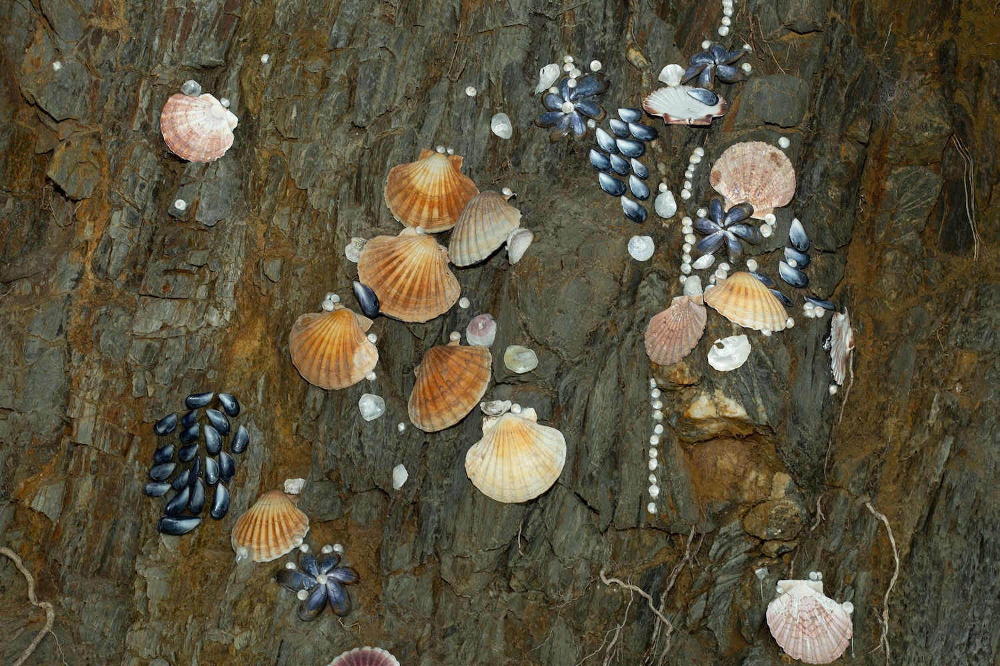
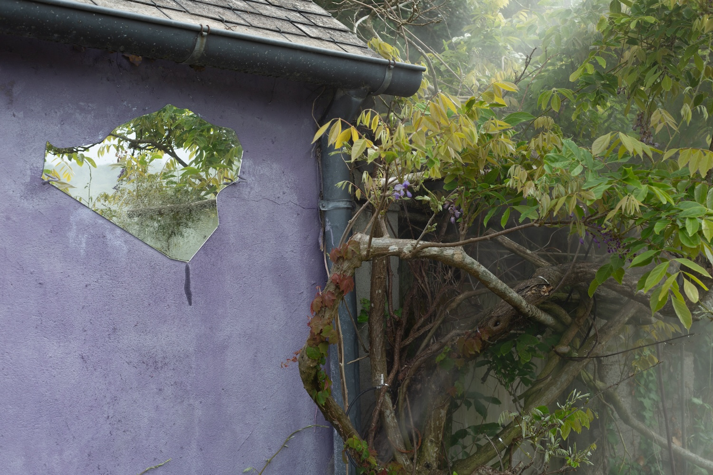
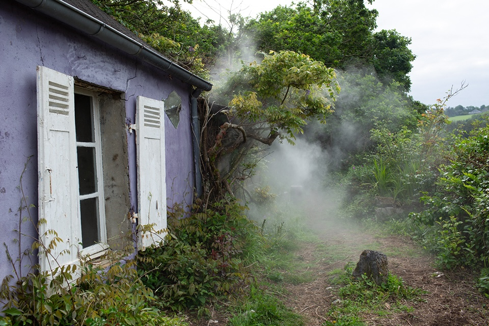

Ici repose Lamour (Here lies Love), with the participation of Robert Kirov
Optimist, shells weaving, shell intervention, tree-cloud, paintings, song by R. Kirov, planted flowers, intervention on a tomb
Soñj festival, Landerneau-Daoulas Land
Grève de La Foest Landerneau
Summer 2024
Delphine Bertrand enjoys telling herself stories. At Ty Naot, the first poetic impulse came from the charms of the tide. Then the term «house of the ferryman» sent her back to myths in which ferrymen also guide souls across. The cave reminded her of another, the «chambre d’amour» in Anglet. According to legend, two lovers drowned there after pledging eternal love. Rich with these fragments of stories, Delphine conceived a work about love and the afterlife. During her creative process, a tombstone previously hidden by bushes is discovered in the garden. She only retains a few words, as a confirmation: «ici repose lamour» «here lies love». With the help of Robert Kirov, Delphine seeks to intensify the experience of the places in her installation to encourage visitors to fantasize, like her. She does not deliver a narrative as such, and distances herself from a relationship with heritage that would be about transmitting the past. The story is more of a deviation, a reinterpretation, an overflow that she allows herself based on objects of memory.
Text written by Marie Adjedj for Soñj Festival
Photographs : Margot Montigny, Bruno Peinado, Robert Kirov